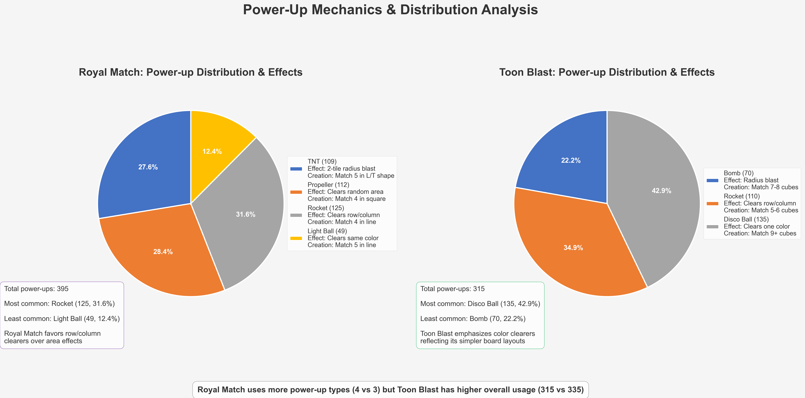

Royal Match vs. Toon Blast: Comprehensive Game Analysis using Updated JSON Data
This analysis shows how the move counts and difficulty levels are distributed across game segments. It provides insights into how each game balances difficulty throughout the player journey.
This visualization breaks down the different power-ups available in each game, their effects, and how frequently they appear. It reveals the different strategies each game employs for player empowerment.
This analysis explores the variety and frequency of obstacles in each game. It highlights how each game creates challenge through different types of obstacles and when they are introduced to players.
This chart maps the overall difficulty curve of both games across all levels, highlighting key milestones and events that occur throughout the player journey.
This dashboard provides a consolidated view of all key metrics from both games for easy comparison and analysis.
This analysis examines the relationship between difficulty spikes and monetization opportunities in both games, revealing strategic placement of monetization touchpoints.
This visualization shows when different obstacles are introduced throughout the games, providing insights into how complexity is gradually increased.
This analysis highlights the timing and strategy of retention features and monetization opportunities in both games.